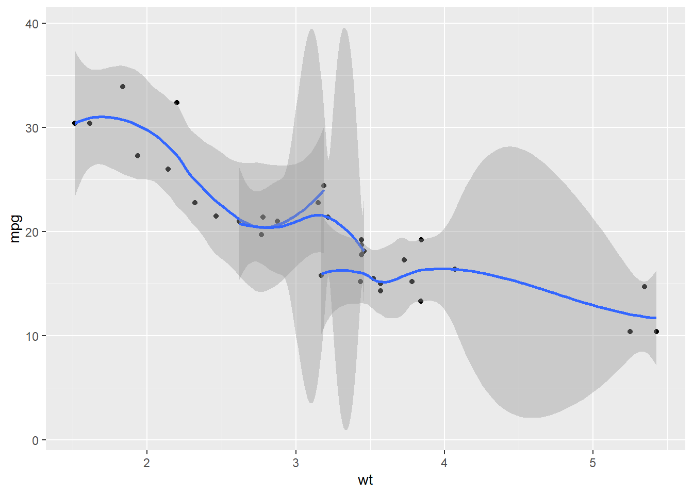
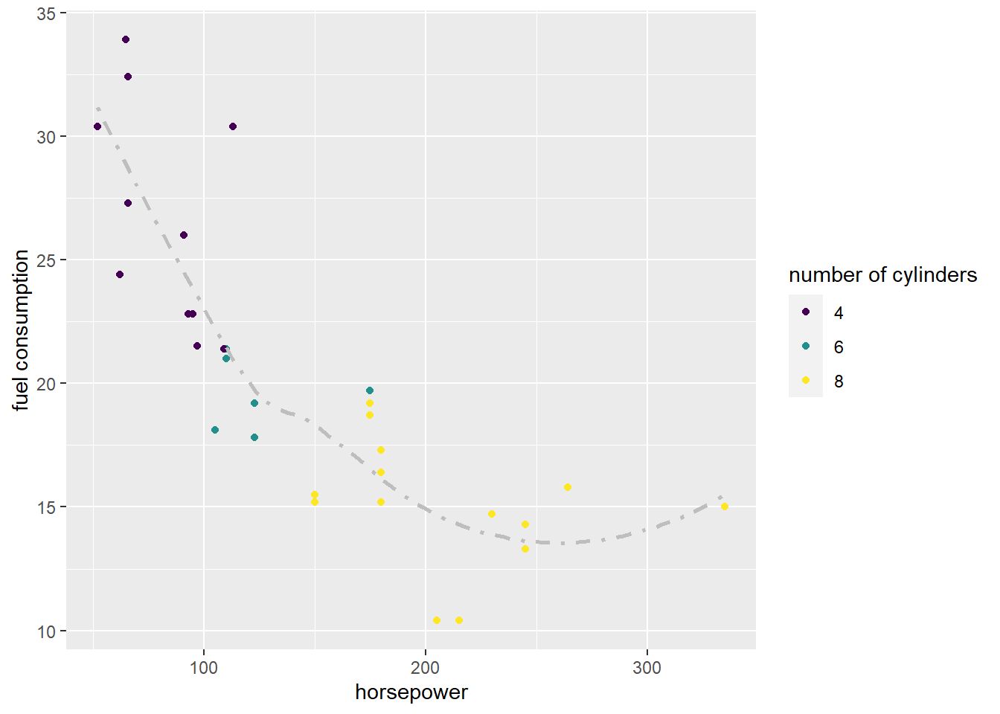
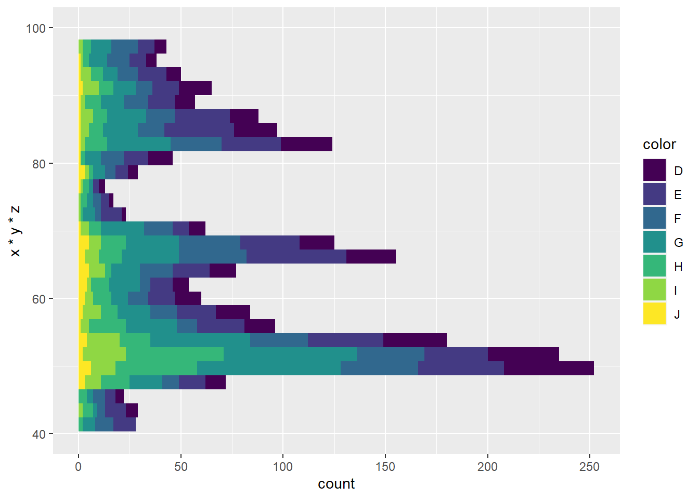

12 Visualising data with ggplot2 package
12.1 Exploratory data analysis
EDA - exploratory data analysis is a process of dataset analysis which aims to allow for familiarization with the data and reaching certain conclusions (or at least hypotheses) about the behavior of variables and observations contained within. The book R for Data Science (co-authored by Hadley Wickham, author of megapopular R packages such as stringr,lubridate, plyr,dplyr, etc.) states that exploratory analysis in principle consists of three main parts:
- data wrangling
- data visualization
- model making
whereby this is not a sequential process but rather a circular one, with the phases often being intertwined. It is important to emphasize that exploratory analysis is not a process that can be automated or passively conducted; the analyst is not only a data observer but plays an active role in the process. What initiates the process are precisely the questions about the data which the analyst needs to provide themselves, and which are then answered by exploratory analysis; questions can be diverse, concise or complex, general or specific, and very often require a high level of creativity and curiosity on the part of the analyst. If we try to give a general template for these questions it might be these: how does a variable behave? How is it changing? What are the relationships between two or more variables? Can changing one variable explain the change of another variable?
We have already been familiar with data wrangling by learning the basic R as well as functions offered by the tidyr anddplyr packages. In this lesson we will learn what many consider to be the backbone of exploratory analysis - data visualization. The third mentioned phase of the process - model creation - concerns the creation of concise representations of data in the form of mathematical (or other) models, which describe the relationships and behavior of variables in a useful and/or easily interpretable way (e.g. recognizing that a linear relationship between two variables can be described with a simple mathematical equation). We will deal with modeling in one of the upcoming chapters.
12.2 Data visualization using the R language
One of the frequently mentioned features of the R language is its superior data visualization functionality. There are a number of analysts and developers who use R almost exclusively as a visualization tool because they can produce professional, attractive and easily interpretable graphs in a very fast and easy way. The basic R language itself has very good support for graphing (the so-called base plot system), but the true power of visualization lies in the many additional packages available through the CRAN repository.
Basic support for graphing is achieved with the help of the generic plot function which has a great advantage in its exceptional simplicity when used in the straightforward fashion. Almost every popular class has its own implementation of this function, which means that for “fast” visualization it is often enough to just pass the desired object (or objects) to the specified function. For example, if we pass two numerical vectors of equal size to the function, the plot function will automatically create a graph with the first vector mapped to the x-axis and the second to the y-axis (represented by a linear continuous scale). The function will also automatically add appropriate annotations such as axis lines, tick marks and associated values, axis labels, etc.
Exercise 12.1 - plot function
x <- 1:50
# pass arguments `x` and `x * x` to the `plot` functionx <- 1:50
# pass `x` and `x * x` to the `plot` function
plot (x, x * x)Basic support is functional and simple, but limited. New things can be added to the created graph, but not modified. Likewise, fine-tuning certain aspects of the graph often makes the calls cumbersome and unreadable, and the aspect of simplicity (which is the main reason for using the plot function) is lost.
Some of the R extensions which offer additional ways to draw visualizations are popular visualization packages such as grid andlattice. The grid package offers a richer set of functions for creating visualizations than those available within basic support, but there is no ability to calculate statistics related to the visualization itself, which often then needs to be performed “manually” before visualization functions are called. The lattice package is especially popular for creating so-called “conditional” or “faceted” graphs, which means more graphs of the same type are quickly vreated where each graph corresponds to an individual value of a feature (e.g. multiple graphs created for each gender or age group). The lattice package also has support for the automatic creation of graph legends, etc., which often has to be done manually with other packages. The biggest issue this package is probably the fact that it is not based on any formal model, which amongst other things makes it difficult to extend it with additional functionality.
There are other popular packages, either for general visualization needs or for specific applications, but we will ultimately focus on the most popular visualization packages of the R language today - the ggplot2 package. The author of this package is already mentioned prof. Hadley Wickham, and the package itself is based on the so-called “grammar of graphics” (which is why it’s called ggplot2, with 2 denoting that the package is primarily used for drawing two-dimensional visualizations).
The popularity of this package lies in the fact that it tries to combine the benefits of basic graphing support and the lattice package, while relying of a formal, clearly defined model. The advantage of this approach is that it enables the creation of a wide range of visualizations based on concise and cleary syntax as well as allowing for easy extension with additional functionality. A potential problem is a slightly steeper initial learning curve since it is necessary to first adopt the “logic” of graph creation, or to be more precise to learn the basic principles of the “grammar of graphics”. But once this initial obstacle is overcome, creating high quality visualizations is quick, easy, and effective, as evidenced by the fact that ggplot2 is now one of the most popular data visualization packages that has gone beyond the boundaries of R and is being reimplemented in other programming languages for data analysis (e.g. package ggplot in Python, package gramm in Matlab etc.).
12.3 Grammar of graphics and the ggplot2 package
Grammar of graphics gives us the following:
- principles that enable the creation and interpretation of complex visualizations
- guidelines to understand what represents a “well-crafted” visualization
Just as grammar in linguistics enables the formation of “quality” sentences, so does the grammar of graphics allow to view graphs as a kind of “sentence” whose understanding depends on how to fit the individual components into a clear, understandable whole. But, again just like in “regular” grammar, a sentence can be grammatically correct but still meaningless - in other words, grammar is the basis for quality, but not a guarantee of the same; the meaningfulness and purposefulness of the final result still depends on the creativity and ability of the creator of the “sentence”, i.e. visualization.
In order to facilitate the learning of grammar of graphics, which realistically represents the biggest obstacle to mastering the ggplot2 package, it is important to adhere to its basic principle that can be paraphrased in this way - quality visualization is actually a composition of a number of components, each of which has a clearly defined role. Consequently, we should not view the graph as one compact unit, but should try to identify the individual parts and learn how they contribute to the final visualization. These parts are not necessarily the visual components of the graph, that is, the parts that make up the graphics we are looking at, but the building blocks that the visualization system uses to produce the final result.
12.3.1 Aspects of data, aesthetics and geometries
To begin with, let’s introduce a simplified grammar model which uses three basic components:
- data (which we want to visualize)
- aesthetics (which describe how to map data to graph elements)
- geometries (which describe how graph elements appear visually)
Data is, of course, a key component of the graph. It represents the central thing we want the showcase with the visualization itself. It is also relatively independent of the other components of visualization - we can develop the same principles of visualization and then apply them over different datasets. Nevertheless, the creation of a new graph usually begins with the inspecting the features of the dataset and how they may dictate the direction of the further steps in the visualization process.
Aesthetics does not really have to do with its literal interpretation of “set of principles concerned with the nature and appreciation of beauty” but is actually about choosing how to display particular segments of the dataset on a graph. Namely, in order for the visualization of the data to make sense, we must present that information in a visually interpretable way - or in another words, “map the dataset variables to graph elements”. A common principle is to display a variable value as a position on a two-dimensional plane with the help of a Cartesian coordinate system, which segments the plane orthogonally using two axes, called x and y, which in turn represent two “basic aesthetics”. These are not the only aesthetics available to us - there are also color, shape, pattern, etc. One way explain aesthetics is “that what is being explained by a legend beside a graph”; if aesthetics is actually a mapping to a visual component of a graph, the legend of the graph is its inverse - an explanation of what that component actually means.
Finally, geometry is actually a description of how to actually draw specific graph elements. For example, if we mapped some dataset variables to the x and y axes, then an individual observation could be represented by a point, which in turn would mean we are using the so-called scatterplot graph which relies on point geometry. We could also decide on the line geometry and present the same data with a line which connects observations (which is a common way to depict time series data). In short, geometry can most easily be tied to that what we colloquially call the “graph type” - we choose to draw a scatterplot, a line graph, a boxplot, a bar chart, a histogram etc. and all this boils down to picking the appropriate “geometry” for our graph.
Each geometry has its own parameters that can be either fixed or data dependent. For example, a point has the properties of its position (x and y coordinates in the Cartesian system), color and shape. We can depict all points on a graph by using a circle shape, or a cross, or any other available symbol, but we can also make it so the shape o this point depends on the value of a categorical variable. Furthermore, we can “stack” different geometries so that the same graph ultimately becomes a merged combination of various geometries.
Let’s demonstrate all this with an example. For the first batch of examples, we will leverage the mtcars dataset that we received with the basic R language distribution (within the datasets package). Let’s load that dataset into the global environment using the `data¸function.
Exercise 12.2 - getting acquainted with mtcars dataset
# load the `mtcars` dataframe into the global environment
# briefly explore the `mtcars` dataset (glimpse, head ...)# load the `mtcars` dataframe into the global environment
data(mtcars)
# briefly explore the `mtcars` dataset (glimpse, head ...)
glimpse(mtcars)
head(mtcars)## Rows: 32
## Columns: 11
## $ mpg <dbl> 21.0, 21.0, 22.8, 21.4, 18.7, 18.1, 14.3, 24.4, 22.8, 19.2, 17.8,…
## $ cyl <dbl> 6, 6, 4, 6, 8, 6, 8, 4, 4, 6, 6, 8, 8, 8, 8, 8, 8, 4, 4, 4, 4, 8,…
## $ disp <dbl> 160.0, 160.0, 108.0, 258.0, 360.0, 225.0, 360.0, 146.7, 140.8, 16…
## $ hp <dbl> 110, 110, 93, 110, 175, 105, 245, 62, 95, 123, 123, 180, 180, 180…
## $ drat <dbl> 3.90, 3.90, 3.85, 3.08, 3.15, 2.76, 3.21, 3.69, 3.92, 3.92, 3.92,…
## $ wt <dbl> 2.620, 2.875, 2.320, 3.215, 3.440, 3.460, 3.570, 3.190, 3.150, 3.…
## $ qsec <dbl> 16.46, 17.02, 18.61, 19.44, 17.02, 20.22, 15.84, 20.00, 22.90, 18…
## $ vs <dbl> 0, 0, 1, 1, 0, 1, 0, 1, 1, 1, 1, 0, 0, 0, 0, 0, 0, 1, 1, 1, 1, 0,…
## $ am <dbl> 1, 1, 1, 0, 0, 0, 0, 0, 0, 0, 0, 0, 0, 0, 0, 0, 0, 1, 1, 1, 0, 0,…
## $ gear <dbl> 4, 4, 4, 3, 3, 3, 3, 4, 4, 4, 4, 3, 3, 3, 3, 3, 3, 4, 4, 4, 3, 3,…
## $ carb <dbl> 4, 4, 1, 1, 2, 1, 4, 2, 2, 4, 4, 3, 3, 3, 4, 4, 4, 1, 2, 1, 1, 2,…
## mpg cyl disp hp drat wt qsec vs am gear carb
## Mazda RX4 21.0 6 160 110 3.90 2.620 16.46 0 1 4 4
## Mazda RX4 Wag 21.0 6 160 110 3.90 2.875 17.02 0 1 4 4
## Datsun 710 22.8 4 108 93 3.85 2.320 18.61 1 1 4 1
## Hornet 4 Drive 21.4 6 258 110 3.08 3.215 19.44 1 0 3 1
## Hornet Sportabout 18.7 8 360 175 3.15 3.440 17.02 0 0 3 2
## Valiant 18.1 6 225 105 2.76 3.460 20.22 1 0 3 1We can see that this data describes the characteristics of 32 (old) cars such as: weight, maximum speed, horsepower, number of cylinders and the like.
Since some of the variables in this dataset have a numeric datatype even though a categorical type would be more suitable, before we continue we can first factorize these variables. While we are doing this, we can also demonstrate a few as yet unused parameters and functions which help with the categorization - the labels parameter which allows “relabeling” of categories (according to the numerical and alphabetical order of the original categories) and the ordered function which is simply a shorthand way to convert a numerical variable into a categorical with the natural order of numbers being used as a template for ordering category levels.
mtcars$vs <- factor(mtcars$vs, labels = c("V", "S"))
mtcars$am <- factor(mtcars$am, labels = c("automatic", "manual"))
mtcars$cyl <- ordered(mtcars$cyl)
mtcars$gear <- ordered(mtcars$gear)
mtcars$carb <- ordered(mtcars$carb)When we create a ggplot2 visualization it often helps to think about the “layers” of the graph. Each layer in some way “overlays” a graph like a transparent sheet, which allows us to place multiple different types of data representations on the same graph (e.g. we show points and then also connect them with a line).
Let’s say we’re interested in the relationship between car weight and its fuel consumption. An intuitive way of visualizing would be:
- car weight (
wt) on thexaxis of the graph - fuel consumption (
mpg) on theyaxis of the graph
Let’s see how to do this with the help of ggplot2 visualization. Note that we will intentionally use the “extended” syntax first - this way of creating ggplot2 graphs is almost never used in practice since there is a much more convenient, concise method, but doing it like this first we can more easily spot some of the essential elements of graph construction which correspond to the components outlined by the grammar of graphics.
Let’s now create a scatterplot showing the relationship between the weights and fuel consumption values of cars as described by the mtcars dataset.
12.3.1.1 The first ggplot2 graph
ggplot() +
layer (data = mtcars, # 1. data
mapping = aes(x = wt, y = mpg), # 2. mapping / aesthetics
geom = "point", # 3. geometry
stat = "identity", # ignore for now
position = "identity") # ignore for now
The basic graph building function is the ggplot function (notice the absence of the number 2 in the function call! - to simplify things, we will call these graphs ggplot graphs from now on, to mimic the name of the function, not the package). This function initializes an object of class ggplot - ggplot visualizations are actually objects, and what we normally consider to be a graph is only their visual representation. This is where the power of this type of representation actually lies - a graph is something we can change, reshape, extend, and store at will, with the visualization being merely the final by-product of managing this object.
We then add “layers” to this object using the layer function. We add a layer to the object with the help of the operator +, which is ubiquitous when creating ggplot graphs. This layer as such has those grammatical aspects that we discussed earlier - data, aesthetics, and geometry. In the call, we see two more aspects of graphic grammar - statistics and position - which we will explain later in this chapter; for now it suffices to say that identity corresponds to ‘leave it as is’, that is, we are not using some additional processing within the visualization process which may be provided by these aspects if needed.
Although formally each layer has its own grammatical aspects, there are almost always aspects that are common to all layers (e.g. very often one graph shows just one data set and all layers share the x and y axes). If this is the case with our visualization, then we can define them as such immediately when creating the ggplot object, which then become the default parameters of the subsequent layers we add (although the layers always have the option of overriding these “default” parameters). Furthermore, when we add layers we rarely call the layer function itself; a much more convenient choice is calling one of the many helper functions offered by the ggplot2 package that have intuitive names and pre-set many of the parameters for us. For example, the geom_point function adds a layer that will inherit the default parameters set in the ggplot call and automatically sets the geometry aspect to “point”.
In the following example we can see this “shorthand” way of creating a ggplot graph:
# first `ggplot` graph, abbreviated graph construction method
ggplot(mtcars, aes(x = wt, y = mpg)) + geom_point()
There is another “simplified” way to create ggplot graphs which leverages the qplot function (from quick plot’*). This function is actually a wrapper that allows us to create ggplot graphs using a syntax which is very similar to the syntax of the default plot function.
# first `ggplot2` graph created using the `qplot` function
qplot(x = wt, y = mpg, data = mtcars)
The main reason for the existence of this function is offering a quick and easy alternative to the programmers used to the default plot function. While this way may seem convenient and straightforward, but is not recommended to be used in the long run, since it shares the same issues as the default plot function - it is good for quick and simple calls, but soon loses the advantage of simplicity when our visualizations become more involved.
Now let’s go back to our graph - what if we wanted to add an extra variable on it? For example, we can see that all cars have either 4, 6 or 8 cylinders, and we want to communicate this information of our graph. Would this mean that we need to add a third dimesion to our two-dimensional graph? Not necessarily - we can simply use some of the unused aesthetics so far, such as color, size or shape of the points.
Exercise 12.3 - the shape aesthetic
# create a `ggplot` graph of the `mtcars` dataset with mappings: x = wt, y = mpg, shape = cyl
# use point geometry
# what happens if we put `as.numeric(cyl)` instead of the categorical variant?ggplot(mtcars, aes(x = wt, y = mpg, shape = cyl)) + geom_point()## Warning: Using shapes for an ordinal variable is not advisedExercise 12.4 - the color aesthetic
# create the same graph, but instead of the `shape` aesthetic, use the `color` aestheticggplot(mtcars, aes(x = wt, y = mpg, color = cyl)) + geom_point()Exercise 12.5 - combining aesthetics
# create the same graph, but now for the `cyl` column, combine both the `shape` and `color` aestheticsggplot(mtcars, aes(x = wt, y = mpg, color = cyl, shape = cyl)) + geom_point ()## Warning: Using shapes for an ordinal variable is not advisedBy comparing the graphs, we can conclude that the color communicates information much better than the shape, which means that it is often the preferred aesthetic (but not appropriate if our graphs have to be in black and white). Also, notice that we can easily combine two aesthetics over the same variable if we wanted.
12.3.1.2 The labs function
We have seen that ggplot automatically creates a legend for its aesthetics and that it names the axes with a variable name ( axes x and y are also “legends” of sorts). If we want to manually name axes and legends, and perhaps add a title to the graph, we can use the labs function, which we also add as a new layer using the following syntax:
ggplot(...) + ...
+ labs (x = "x axis title", y = "y axis title", title = "Graph Title")Let’s try this in the next assignment.
Exercise 12.6 - labs function
# rename axes and legend of the following graph
# and add a suitable title (something that succintly describes what the graph represents)
ggplot(mtcars, aes (x = wt, y = mpg, color = cyl, shape = cyl)) + geom_point()## Warning: Using shapes for an ordinal variable is not advised
# rename axes and legend of the following graph
# and add a suitable title (something that succintly describes what the graph represents)
ggplot(mtcars, aes(x = wt, y = mpg, color = cyl, shape = cyl)) + geom_point () +
labs (x = "Weight / 1000 lb", y = "Consumption / miles per gallon",
color = "Number of cylinders", shape = "Number of cylinders",
title = "Heavier cars spend more fuel")## Warning: Using shapes for an ordinal variable is not advised12.3.2 Fixed geometry parameters
Before proceeding, let us focus on one rather important thing that we have not yet clarified: what if we want to tweak certain parameters of a selected geometry but want to keep them fixed, instead of tying them to a particular aesthetic (i.e. mapping to a particular variable)? Or, specifically - what if we wanted to make a scatterplot which has red points, or “X” shapes - that is, fixed color and shape, rather than dependent on a variable?
To achieve this, we simply initialize the parameters inside a function corresponding to the geometry we are adding, and we pay attention NOT to wrap the parameters inside the aes function (which automatically corresponds to “mapping”). The values to which we initialize these parameters have to be meaningful for that aesthetic (i.e. “color” can be set to "red" or "#FF0000"', "shape" to numbers from0to25` which correspond to a specific table of shapes etc.) The appropriate values of each aesthetic can be found in the official documentation.
Correct example of changing the “global” color of points:
ggplot(mtcars, aes(wt, mpg)) + geom_point(color = "blue")Example which uses the wrong syntax:
#ggplot will do the mapping of the word "blue" to the `color` aesthetic
ggplot(mtcars, aes(wt, mpg)) + geom_point(aes(color = "blue"))Exercise 12.7 - fixed geometry parameters
# draw a scatterplot showing the relationship between `wt` and `mpg`
# make the points red, their shape to `4` and size to `3`ggplot(mtcars, aes(x = wt, y = mpg)) + geom_point(color = "red", shape = 4, size = 3)12.3.3 The aspects of statistics and position
Let’s look again at the graph we keep drawing. What if instead of a scatterplot we opted for a different geometry, one that shows the relationship between weight and fuel consumption with connected lines?
Try adding a line geometry layer to this graph. You can use the layer function with the geom parameter set to line, but the more popular approach is to use the geom_line helper function, which works similar to the geom_point function. Since we keep recycling the same foundation for our graph, we can first save it to an object before adding layers to it.
Exercise 12.8 - adding a line layer
# we store the foundation of our graph in a variable called `graph`
graph <- ggplot(mtcars, aes (x = wt, y = mpg))
# add the point geometry followed by the line geometry to this object and print it on screen# add the point geometry followed by the line geometry to this object and print it on screen
graph + geom_point() + geom_line()We got what we asked for, but the result is not overly successful because this jagged line obscures rather than adds additional information. This type of data representation is popular for time series graph, but does not seem to be the correct choice for this dataset. What would probably be more appropriate for us is a line which showcases the relationship between weight and fuel consumption by simplifying it to a single, “smooth” line, that is, a line that approximates the positions of points that describe weight and consumption, rather than directly describing them. For this we need to get back to the we have met in our very first call to the ggplot function (more precisely, thelayer function). Those are aspects of statistics and position.
Statistic is an aspect of the grammar of graphics that performs some additional calculations over a dataset before visualizing it. While we can always manually perform these calculations, usually it’s much more convenient to let them be calculated automatically, especially if said calculations are only for one-time use in our visualization (e.g. a bar chart which shows the frequencies of a categorical variable using the height of columns).
Mostly statistics perform some sort of aggregation (although not always). Some of the more commonly used statistics are:
count- counting occurrences (for categorical variables)bin- binning occurrences in trays and then counting (for continuous numerical variables)smooth- “smoothing”, i.e. “averaging” using the selected method (usuallylmfor linear orloessfor curved smoothing)unique- removing duplicatesidentity- direct mapping, i.e. “leaving it as is”
These are just some of the statistics, and more can be found in the documentation.
Each statistic has its own helper function that follows the form of stat_<statistic_name> and which creates its own layer related to that statistic.
Let us return to our graph of weight vs consumption, but this time instead of adding a layer of linear geometry, we add a layer that will display “smoothing” (i.e. the smooth statistics). This is a good example of using how the statistic aspect works - instead of connecting the points directly with a line, a special function will “average” the values and then connect these averaged values with a (curved or straight) line. To achieve this, we leverage the stat_smooth function, which - if we use default parameters - will create a new layer with a “smoothed” representation of the y variable according to the x variable, using the so-called loess method, while also displaying the confidence intervals.
Exercise 12.9 - linear smoothing
# add the point geometry to the variable `graph`
# then add a linear smoothing layer
# use the `stat_smooth` function
# with the `method` parameter set to `lm` (linear smoothing)graph + geom_point() + stat_smooth(method = 'lm')## `geom_smooth()` using formula 'y ~ x'
Exercise 12.10 - ‘loess’ smoothing
# repeat the process but se the smoothing method to `loess`graph + geom_point() + stat_smooth(method = 'loess')## `geom_smooth()` using formula 'y ~ x'Exercise 12.11 - the group aesthetic
# create the same graph again
# but while creating a smoothing layer
# add the `group` aesthetic and set it to `cyl`
# What have we achieved by doing this?graph + geom_point () + stat_smooth(aes(group = cyl), method = 'loess')## `geom_smooth()` using formula 'y ~ x'
In the last example we witnessed the so-called group aesthetic in action. It works similar to the group_by function in SQL or dplyr, that is, it performs aggregations (or more generally the statistic aspect) over the subgroups defined by the variable instead of the entire dataset. By using this aesthetic, we can show separate calculations in the graph according for each selected group, like in this example where the smoothing is done for each subgroup of cars which share the same number of cylinders.
Certain visualizations will automatically set the “group” aesthetic when we put a categorical variable on some other aesthetic (like the “color” or “shape”). This can interfere with our statistic aspects we want to add, especially if we want to perform them over the entire dataset. In that case the easiest solution is to set the group aesthetic to the number 1, which will be interpreted as “there is just one big group” and will encompass the entire dataset when calculating the statistic aspect.
12.3.4 The relationship between geometry and statistics
As a rule, certain geometries naturally use “their” statistics (for example, a bar chart naturally uses the statistics which counts the category frequencies). In practice, this means that when we add “statistical” layers, we can choose to use either the stat or geom helper function and the result will be identical, since both functions use the appropriate default geometry/statistics. For example, geom_bar uses the count statistic by default, and will give the same result as using stat_count which has the geometry set to bar.
Which helper functions should we lean toward to then, stat orgeom? In practice, `geom ’functions are used somewhat more often, mostly because of the slightly more consistent syntax of graph construction, but ultimately the choice is irrelevant if the result is the same.
Let’s now create a bar chart of the number of cylinders in cars described in the mtcars dataset. For this we willl use the geom_bar helper function and its preset count statistic.
Exercise 12.12 - bar chart
# draw a bar chart of the `cyl` variable from the `mtcars` table
# use either the `geom_bar` or `stat_count` function# draw a bar chart of the `cyl` variable from the `mtcars` table
# use either the `geom_bar` or `stat_count` function
ggplot(mtcars, aes(x = cyl)) + geom_bar()We can use a similar representation for our numerical variable. Unlike a bar chart, which directly counts the occurencies of different categories, with numerical variables we first need to group values into so-called bins. After counting the number of observations in each bin we build a graph called a histogram. Again, this is done automatically using the bin statistic, and all we need to do is call the geom_histogram function and specify the number of bins.
Exercise 12.13 - histogram
# draw a histogram of the variable `wt` from the` mtcars` table
# group the weights into 4 bins
# use the `geom_histogram` function and the `bins` parameterggplot(mtcars, aes(x = wt)) + geom_histogram(bins = 4)How does the statistical aspect work “under the hood”? As a rule, one or more new (most commonly aggregated) variables are calculated based on existing variables and then temporarily added as additional columns in the data frame. In the documentation we can find specific information about the names of these new variables and their meaning. For example, if we look at the documentation for the stat_bin function, we can see that it creates the variables named count, ncount, density and ndensity. Any of these variables can be used as a height attribute for our category columns, i.e. as a value to put on the y aesthetic. The reason why we did not explicitly state this aesthetic in the previous example is the fact that the statistics function automatically selects the aggregate function that is expected to be one most commonly used (in our case it was count). If we want to use a different aggregation variable, we can explicitly set the y aesthetic to one of the other variables, but we need to leverage the ggplot2 convention where we add a prefix and suffix .. to the names of such variables, like in this example:
aes (x = hp, y = ..density ..)Let’s try this in the following assignment.
Exercise 12.14 - explicitly specifying the aggregation variable
# draw a histogram of the variable `wt` from the` mtcars` table
# group the weights into 4 bins
# use the `geom_histogram` function and the `bins` parameter
# set `ncount` as the aggregation variableggplot(mtcars, aes(x = wt, y = ..ncount..)) + geom_histogram(bins = 4)Let’s go one step further. Draw the same histogram (with default aggregation), but show how many cylinders are represented in each weight category. You can easily do this by adding a fill aesthetic to the geometry which will “fill” the columns with chosen color (as opposed to the color aesthetic that would paint the lines around a rectangles which represent columns in the bar chart).
Exercise 12.15 - the fill aesthetic
# draw a histogram of the variable `wt`
# add the `cyl` variable on the `fill` aestheticggplot(mtcars, aes(x = wt, fill = cyl)) + geom_histogram (bins = 4)Here we see an example of a “combined” histogram - the histogram function will calculate the for each number of cylinders in each weight bin. One way this could be shown would be a three-dimensional graph, where base plane there would contain weight bins and cylinders, while the third dimension would be reserved for the height of the columns. However the ggplot2 is used for creating two-dimensional graphs, and projecting the aformentioned three-dimensional graph on the two-dimensional plane, would cause the columns to overlap. In order for the results to be effectively displayed on a two-dimensional graph, these columns are effectively “repositioned” so that the column for the individual cylinders is placed on top of one another within the same weight category, resulting in the histogram we see before us. In other words, the histogram function used the aspect of position to affect the visual representation of these variables.
Position is an aspect of the grammar of graphics that allows you to “rearrange” the position of a particular aspect of a graph to achieve better representation clarity. In the previous example, we have already observed the “stratification” of columns based on a chosen categorical variable. Under the hood, the function actually used the stack positional aspect which stacks columns one on top of the other. An alternative to this might be to set the position aspect to dodge which would draw the subgroup columns next to each other.
Exercise 12.16 - dodge positional aspect
# draw the same histogram, but set the `position` aspect ratio to `dodge` ggplot(mtcars, aes (x = wt, fill = cyl)) + geom_histogram (bins = 4, position = "dodge")Notice that by using dodge our histogram does not look like our initial histogram (with colored in ratios according to the categorical variable), but has allowed us a clearer view of the relationship between the representation of particular categories within each bin.
What happens if we “turn off” the positional aspect by using the identity value?
Exercise 12.17 - identity positional aspect
# draw the same histogram, but set the `position` aspect ratio to `identity`
# also set the `alpha` geometry parameter to `0.2`ggplot(mtcars, aes (x = wt, fill = cyl)) +
geom_histogram(bins = 4, position = "identity", alpha = 0.4)As we can see, the positional aspect of identity means “without repositioning”. The result is the pure projection of the aforementioned three-dimensional graph, which can only be seen by making the columns “transparent” and is not reallzy that useful to us compared to representations which use appropriate repositioning.
Let’s show another positional aspect - fill (don’t confuse this with the fill aesthetic!).
Exercise 12.18 - fill positional aspect
# draw the same histogram, but set the `position` aspect ratio to `fill`
# for better visibility, frame the rectangles with a black line
# explain the result. What have we achieved with this histogram?ggplot(mtcars, aes(x = wt, fill = cyl)) +
geom_histogram(bins = 4, color = "black", position = "fill")Another example of positional aspect is the addition of “noise” to the observations on a scatterplot to avoid overlap. By adding the jitter positional aspect, we can better visually communicate that there are more observations than it may appear. Jitterings is effective for smaller datasets; for larger we will often get better results by tweaking the transparency parameter, reducing the size of dots, or sampling the set before visualization.
To demonstrate the jittering aspect in action, we will create an “artificial” data frame of 100 partially overlapping observations.
Exercise 12.19 - jitter positional aspect
df <- data.frame( x = c(rep(1, 90), rep(2, 9), 3),
y = c(rep(1, 70), rep(2, 25), rep(3, 5)))
# create a scatterplot of the `df` data frame# create a scatterplot of the `df` data frame
ggplot(df, aes(x = x, y = y)) + geom_point()Exercise 12.20 - jitter positional aspect (2)
# display the same graph, but instead of using `geom_point` use `geom_jitter`
# set `width` and` height` parameters to 0.3 (30% added noise)
# additionally set the `color` geometry parameter to 'blue'
# and `alpha` parameter (transparency) to 0.4ggplot(df, aes(x = x, y = y)) +
geom_jitter(width = 0.3, height = 0.3, alpha = 0.4, color = "blue")12.3.5 Storing a graph to a file
We often need to save our graph to a file so that it can be easily embedded in another report document, scientific paper, forwarded by email, etc.
By default, R uses the screen as a “graphical device”. Optionally, we can “redirect” the graphics to another “device”, usually a file of a certain type (png,tiff, pdf, etc.). The list of all options can be viewed with the command ?Devices. The png andtiff formats are recommended for storing graphs in raster format, while it is common to use pdf for vector format.
Saving graphs can be done by calling the function corresponding to the format in which we want to store the image (eg the pdf function will save the next image to a pdf file), but the ggplot2 package offers a more convenient way - the ggsave function will store the last drawn graph into a file of the selected name, whereby the image format will be deduced from the file extension we choose. This method is better because we have the chance to see the graph first and then decide on storage.
Exercise 12.21 - saving graph to file
# save the following graph in the files `figures1.pdf` and` figures1.png`
ggplot(mtcars, aes(x = hp, y = mpg, col = as.factor (cyl))) +
geom_point() +
geom_smooth (aes(x = hp, y = mpg), method = 'loess',
linetype = 4, color = "gray", se = F, inherit.aes = F) +
labs(x = "horsepower", y = "fuel consumption", col = "number of cylinders")## `geom_smooth()` using formula 'y ~ x'
ggsave("figure1.pdf")
ggsave("figure1.png")12.3.6 Aspects of scale, coordinate system and theme
We have learned so far that creating ggplot graphs often boils down to mapping the dataset columns to the aesthetics of the graph. Scales are an aspect that controls the specifics how this mapping is performed, that is, the method of mapping the data itself to the visual elements of aesthetics. In the case of coordinate axes, it is a matter of mapping numerical or categorical values to specific distances on the axes themselves, while for for the color aesthetic, the scale decides which color corresponds to which value of the original data. The scale aspect is also the basis for creating a legend for the graph.
This aspect has always been implicitly present so far, but we have allowed the ggplot2 package to choose the default values for us. In the general case, ggplot2 controls the aspect of the scale relatively well regardless of the aesthetics we use, but very often we want to be able to, for example, change the range of values contained in the graph, labels on axes, colors or shapes used etc.
In this lesson, we will focus only on the scales that are relatively common in practice. Other functions and options related to the aspect of scale can be found in the official documentation.
As with the aspects of geometry and statistics, when working with the scale aspect, we most often use the helper functions which look like this (* represents the name of aesthetics, such as x,y, color etc.):
scale_*_continuous- for mapping continuous (numeric) valuesscale_*_discrete- for mapping discrete values
Each of these functions has a number of parameters that we can use to influence the mapping process. For example, if we look at the documentation for scale_x_continuous we can see that we can set parameters for, among other things:
name- the name of the scale which also becomes the name of the axis / legendbreaks- the positions where ticks are placedlabels- the labels which will be printed below the tickslimits- the range of values that will be on the axis- etc.
It is important to note that ggplot2 has a lot of additional helper functions that allow us to adjust some parts of the scale aspect, such as the already seen labs function for renaming the graph title and labels on the x and y axis. Another example are also xlim and ylim which only affects the axis range, etc. It is often worth to check out the documentation, and pick and choose the functions which will help our work the most by shortening the syntax for the visualization tasks we perform most often.
Let’s try to leverage the scaling aspect in the following assignments. We will use a new dataset - diamonds from the ggplot2 itself. This dataset describes various features of diamonds along with their estimated value.
Exercise 12.22 - getting acquainted with diamonds dataset
# briefly explore the `diamonds` data frame# briefly explore the `diamonds` data frame
glimpse(diamonds)
head(diamonds)## Rows: 53,940
## Columns: 10
## $ carat <dbl> 0.23, 0.21, 0.23, 0.29, 0.31, 0.24, 0.24, 0.26, 0.22, 0.23, 0.…
## $ cut <ord> Ideal, Premium, Good, Premium, Good, Very Good, Very Good, Ver…
## $ color <ord> E, E, E, I, J, J, I, H, E, H, J, J, F, J, E, E, I, J, J, J, I,…
## $ clarity <ord> SI2, SI1, VS1, VS2, SI2, VVS2, VVS1, SI1, VS2, VS1, SI1, VS1, …
## $ depth <dbl> 61.5, 59.8, 56.9, 62.4, 63.3, 62.8, 62.3, 61.9, 65.1, 59.4, 64…
## $ table <dbl> 55, 61, 65, 58, 58, 57, 57, 55, 61, 61, 55, 56, 61, 54, 62, 58…
## $ price <int> 326, 326, 327, 334, 335, 336, 336, 337, 337, 338, 339, 340, 34…
## $ x <dbl> 3.95, 3.89, 4.05, 4.20, 4.34, 3.94, 3.95, 4.07, 3.87, 4.00, 4.…
## $ y <dbl> 3.98, 3.84, 4.07, 4.23, 4.35, 3.96, 3.98, 4.11, 3.78, 4.05, 4.…
## $ z <dbl> 2.43, 2.31, 2.31, 2.63, 2.75, 2.48, 2.47, 2.53, 2.49, 2.39, 2.…
## # A tibble: 6 × 10
## carat cut color clarity depth table price x y z
## <dbl> <ord> <ord> <ord> <dbl> <dbl> <int> <dbl> <dbl> <dbl>
## 1 0.23 Ideal E SI2 61.5 55 326 3.95 3.98 2.43
## 2 0.21 Premium E SI1 59.8 61 326 3.89 3.84 2.31
## 3 0.23 Good E VS1 56.9 65 327 4.05 4.07 2.31
## 4 0.29 Premium I VS2 62.4 58 334 4.2 4.23 2.63
## 5 0.31 Good J SI2 63.3 58 335 4.34 4.35 2.75
## 6 0.24 Very Good J VVS2 62.8 57 336 3.94 3.96 2.48This dataset has around 54,000 observations which might slow down the drawing of our graphs somewhat. Let’s reduce it by sampling 5000 random observations.
Exercise 12.23 - sampling the diamonds data frame
set.seed(1001)
# sample 5000 random rows from `diamonds` data frame
# and store them in a data frame called `diamondsSample`set.seed (1001)
# sample 5000 random rows from `diamonds` data frame
# and store them in a data frame called `diamondsSample`
diamondsSample <- sample_n(diamonds, 5000)Let’s now take a scatterplot which shows the diamonds` volume, price and color and fine-tune its aesthetics with the help of the scale aspect.
12.4 TU
Exercise 12.24 - tweaking the scaling aspect of aesthetics
# "fix" the axes and the legend of the graph
# - call the x and y axes "volume in mm3" and "price in $"
# - call the color legend "color quality"
# - limit x axis from 0 to 500
# - set the y axis breaks on 1000, 5000, 10000 and 20000
# - instead of D-J label the color "quality" as numbers from 1 to 7
ggplot(diamondsSample, aes (x * y * z, price, color = color)) + geom_point (alpha = 0.4)ggplot(diamondsSample, aes(x * y * z, price, color = color)) +
geom_point(alpha = 0.6) +
scale_x_continuous(name = "volume in mm3", limits = c (0, 450)) +
scale_y_continuous(name = "price in $",
breaks = c (1000, 5000, 10000, 15000)) +
scale_color_discrete(name = "color quality", labels = 1:7)## Warning: Removed 3 rows containing missing values (geom_point).Notice that ggplot will report if some observations are not shown due to unavailable data (NA values in variables we want to depict). To prevent this warning, it is sufficient to add the argument na.rm = T to the geometry layer.
It is very common to notice “an exponential trend” in our data - in other words, that the relationship between two variables reminds us of an exponential function. The previous graph is also a lesser example of such a scenario - it can be observed that the price of diamond initially only “slightly” increases with the diamond volume, and later it starts to rise more steeply.
In such cases data analysts often make a decision to transform the data - for example, in our case we could use the natural logarithm of the price instead of its absolute value, to try and turn the exponential trend into a linear one, which we generally prefer. However, the transformation of price into logarithms carries with it a problem of interpretation - a graph is easier to interpret if it contains original data values instead of derived ones (1000 dollars versus 3 “dollar logarithms”).
Scales can help us in this case - instead of changing the data, we simply switch to a different scale. Specifically, instead of the scale_*_continuous function we opt for:
scale_*_log10- uses a logarithm scale (base 10)scale_*_reverse- flips the scale from right to left (or down to up)scale_*_sqrt- uses square roots of values
Exercise 12.25 - logarithmic scale
# change the y axis to a logarithmic one
ggplot(diamondsSample, aes (x * y * z, price, color = color)) + geom_point (na.rm = T, alpha = 0.6) +
scale_x_continuous (name = "volume in mm3", limits = c (0, 450)) +
scale_y_continuous (name = "price in $", breaks = c (1000, 5000, 10000, 15000)) +
scale_color_discrete (name = "color quality", labels = 1: 7)
# change the y axis to a logarithmic one
ggplot(diamondsSample, aes (x * y * z, price, color = color)) +
geom_point (na.rm = T, alpha = 0.6) +
scale_x_continuous (name = "volume in mm3", limits = c (0, 450)) +
scale_y_log10 (name = "price in $",
breaks = c (1000, 5000, 10000, 15000)) +
scale_color_discrete (name = "color quality", labels = 1: 7)One thing we often like to “fix” on graphs is colors - whether we want to better emphasize the information that the graph conveys, better fit the graph into the environment we would ultimately place it with, or simply want the graph to use colors that we find more aesthetically pleasing. This is why the color andfill aesthetics are very often further adjusted by scales. We have a good set of helper functions for this (we give examples for the fill aesthetics although similar functions also exist for color):
scale_fill_brewer- selecting one of the pre-prepared color palettes for displaying discrete values; pallete names can be viewed in the documentationscale_fill_distiller- adjusts palettes for discrete values to continuous variablesscale_fill_gradient- select start and end colors that will then “blend”into each other; we useit to display continuous valuesscale_fill_gradient2,scale_fill_gradientn- same as above but with more colorsscale_fill_grey- for black and white visualizations
Exercise 12.26 - color adjustment on graphs
# adjust the `fill` aesthetic of the next graph by using
# the `scale_fill_brewer` function
# Set the `pallete` parameter to one of the following pallets:
# `Blues`, `BuPu`, `Greens`, `Grays`, `Oranges`, `OrRd`, `PuBu`,
# `PuRd`, `Purples`, `YlGn`, `YlOrRd`
# (more palletes can be found in the documentation)
ggplot(diamondsSample, aes(x = x * y * z, fill = color)) +
geom_histogram(bins = 30, na.rm = T) +
xlim(0, 500)# adjust the `fill` aesthetic of the next graph by using
# the `scale_fill_brewer` function
# Set the `pallete` parameter to one of the following pallets:
# `Blues`, `BuPu`, `Greens`, `Grays`, `Oranges`, `OrRd`, `PuBu`,
# `PuRd`, `Purples`, `YlGn`, `YlOrRd`
# (more palletes can be found in the documentation)
ggplot(diamondsSample, aes(x = x * y * z, fill = color)) +
geom_histogram(bins = 30, na.rm = T) +
xlim(0, 500) + scale_fill_brewer(palette = "Greens")# adjust the `fill` aesthetic of the next graph by using
# the `scale_fill_brewer` function
# Set the `pallete` parameter to one of the following pallets:
# `Blues`, `BuPu`, `Greens`, `Grays`, `Oranges`, `OrRd`, `PuBu`,
# `PuRd`, `Purples`, `YlGn`, Y`lOrRd`
# (more palletes can be found in the documentation)
ggplot(diamondsSample, aes(x = x * y * z, fill = color)) +
geom_histogram(bins = 30, na.rm = T) +
xlim(0, 500) + scale_fill_brewer(palette = "YlOrRd")The coordinate system aspect is somewhat more rarely used than other grammar of graphic concepts we covered. The reason is that in most cases we want to use Cartesian coordinate system which is used by default. If we feel that our visualization requires something else - whether it is a polar coordinate system, a “sideways” Cartesian system aside, or - which is especially important when analyzing geographic data - a map representation of our data, we can use the following functions:
coord_polar- polar coordinate systemcoord_flip- changes thexandyaxescoord_map- uses maps frommapsandmapprojpackages
Unfortunately, there are currently no maps of the Republic of Croatia yet, but more ambitious readers can try to create one (and share with the local R community) by following the instructions at this and this links.
Exercise 12.27 - inverted and polar coordinate systems
# change the coordinate system to "inverted" and then to "polar" for the following graph
ggplot(diamondsSample, aes(x = x * y * z, fill = color)) + geom_histogram(bins = 30, na.rm = T) +
xlim(40, 100)# change the coordinate system to "inverted" and then to "polar" for the following graph
ggplot(diamondsSample, aes(x = x * y * z, fill = color)) +
geom_histogram(bins = 30, na.rm = T) +
xlim(40, 100) + coord_polar()# change the coordinate system to "inverted" and then to "polar" for the following graph
ggplot(diamondsSample, aes (x = x * y * z, fill = color)) +
geom_histogram(bins = 30, na.rm = T) +
xlim(40, 100) + coord_flip()
One thing to remember is that the xlim and ylim parameters work differently depending on whether we use them in terms of scale or the coordinate system; limiting the axis in aspect of the scale will “throw out” observations beyond the specified interval, which can affect the calculation of summary statistics, smoothing curves, etc. On the other hand, the limits given in aspect of the coordinate system (as parameters of the function coord_cartesian() will simply “zoom in” the graph to the selected area but will retain all observations when it comes to calculations. Both options are useful, depending on whether we want a graph that displays all the relevant data for a given visualization or a graph that represents an enlarged segment of another graph.
Finally, the theme aspect allows us to influence all visual aspects of the graph that are not related to the data. This means we can choose the background color and layout, font type and size, margins, alignments, and many other graph parameters. The theme aspect gives us extremely detailed control over the appearance of the graph, and since the theme itself is actually an object (of class theme), it can be stored in a variable and then easily recycled for all subsequent visualizations. Likewise, ggplot2 offers a number of predefined themes for use and further customization, which we easily retrieve with a set of helper functions, some of which are:
theme_gray- default themetheme_bw- black and white axes, projector-friendlytheme_classic- “classic” theme similar to the one produced by the defaultplotfunctiontheme_void- “empty” theme
Exercise 12.28 - the aspect of theme
# change the theme of the following graph to `theme_classic`
ggplot(diamondsSample, aes(x = x * y * z, fill = color)) +
geom_histogram(bins = 30, na.rm = T) +
xlim (0, 500)
# change the theme of the following graph to `theme_classic`
ggplot(diamondsSample, aes(x = x * y * z, fill = color)) +
geom_histogram(bins = 30, na.rm = T) +
xlim(0, 500) + theme_classic()Often we want to change only some of the theme-related aspects (i.e. size or orientation of letters, appearance of ticks on axes, etc.). For these things we use the theme function, which contains a very rich set of parameters easily found by checking out the documentation. Some of these parameters are objects called “theme elements” (e.g. element_line,element_text) that we set by calling the associated function within the theme function call, for example:
# changing the visual appearance of the graph title
# (recommended for font family to use
# `serif`,` sans` or `mono`)
... + theme(title = element_text(family = 'serif', face = 'bold.italic'))Exercise 12.29 - modifying theme elements
# change the orientation of the letter on the x axis
# so that they are at an angle of 45 degrees
# search for help in the official documentation if needed
ggplot(diamondsSample, aes(cut)) + geom_bar()ggplot(diamondsSample, aes(cut)) + geom_bar() +
theme (axis.text.x = element_text(angle = 45))12.4.1 Conditional (faceted) graphs
We have previously mentioned the group aesthetic which, prior to visualization within a dataset, groups data into subsets defined by the selected grouping variable and then visualizes them accordingly. We have also learned that we can do implicit groupings using aesthetics of color, shape, size, etc.
What is common to these principles is that visual separation, depending on a variable, is performed inside the same graph. In other words, we can use different aesthetics to represent several different visualizations within a single graph.
Conditional (faceted) graphs work on the same principle, but separation by a selected variable (or variables) is done by visualizing multiple graphs which are then displayed side by side. The resultant graphs present the same information as the aesthetics of the (implicit or explicit) group, but in a way which makes it somewhat easier to study and compare each subgraph separately.
Before demonstrating how to create conditional graphs, we need to perfom a brief detour and explain the term called “statistical formula notation”. This notation is often used in R, especially when training various statistical models, and is actually a way to concisely write a particular, formula-based relationship between variables of the dataset, and then incorporate it into the program code.
The formulas will be discussed in more detail later, and for now we will restrict ourselves to a handful of very simple examples. If we want to write a simple formula of “y depending on x,” then the final formula looks like this:
y ~ x # means "y depending on x"we can also read this as “y as a function of x” or - in the case of linear models - a more concise notation of y = ax + b. Hence, we read the tilde sign (~) as “depending on”.
Here are some more simple formulas:
# z depending on x and y (`+` means "and", not arithmetic sum!)
z ~ x + y
# y depending on "all other variables"
y ~ .
# "all other variables" depending on y
. ~ y
# so-called "one-sided" formula, shorthand for "depending on y"
~ yThe last two examples are a little harder to define mathematically, but are often used in function calls for different purposes, mostly because of their simple notation and easy interpretation.
Let us now return to the conditional graphs. There are two basic ways to create conditional graphs, by using the functions:
facet_grid- for organizing subgraphs into a grid (matrix)facet_wrap- for organizing subgraphs into one or more rows
We commonly use the facet_grid function when we do subsets according to one or two categorical variables. Splitting two variables naturally does a “matrix” while splitting them one by one will make either a row or column, the choice we control by choosing a specific formula. On the other hand, we use the facet_wrap function when we want to create subgraphs only according to a single variable, but (due to a potentially larger number of categories) we want the subgraphs to span multimple rows (similar to how “word wrap” breaks sentences in text editors).
Exercise 12.30 - facet_grid function
# let's reduce the number of levels first to make the visualization simpler
diamondsSample %>%
filter(color %in% c("G", "H", "I", "J"),
cut %in% c("Very Good",
"Premium", "Ideal")) -> diamondsSample2
# turn the following graph into a conditional graph
# splitting graphs by all combinations of
# colors (`color`) and cuts (`cut`)
# use the `facet_grid` function and
# an appropriate statistical formula as its parameter
ggplot(diamondsSample2, aes(depth, fill = clarity)) +
geom_histogram(bins = 5, position = 'dodge')ggplot(diamondsSample2, aes(depth, fill = clarity)) +
geom_histogram(bins = 5, position = 'dodge') +
facet_grid(color ~ cut)Exercise 12.31 - facet_grid function (2)
# repeat the same as above, but now group only by color
# arrange subgraphs into a column
# use the `facet_grid` function and formula notation with a dot
ggplot(diamondsSample2, aes(depth, fill = clarity)) +
geom_histogram(bins = 5, position = 'dodge')ggplot(diamondsSample2, aes(depth, fill = clarity)) +
geom_histogram(bins = 5, position = 'dodge') + facet_grid(color ~ .)
Note one important feature of conditional graphs - the coordinate axes (ie scales) are aligned. Specifically, before visualization, ggplot first check the scales of subgraphs in order to find the maximum range, which is then used as a common feature of all graphs. This is usually a preferred, feature, but if we do not want it, we can “free” a particular axis (or both) by setting the scales parameter free (for both axes) or free_x / free_y (if we only want one axis aligned and the other “free”).
Let’s now take a look at how the facet_wrap function works:
Exercise 12.32 - facet_wrap function
# break the following graph into subgraphs based on transparency (`clarity`)
# use the `facet_wrap` function and a one-sided formula
ggplot(diamondsSample2, aes(x * y * z, price)) + geom_point()
# break the following graph into subgraphs based on transparency (`clarity`)
# use the `facet_wrap` function and a one-sided formula
ggplot(diamondsSample2, aes(x * y * z, price)) +
geom_point() + facet_wrap(~clarity)12.5 Graphs in Exploratory Analysis and Reporting
Before we finish the chapter, we can briefly look at the difference between graphs made for exploratory data analysis and those we use in reports, to communicate our conclusions to other people, and to share our findings.
Exploratory data analysis often aims for efficiency and quantity. It has already been said that exploratory analysis comes down to answering a series of questions that an analyst asks regarding data. How pretty the graph looks is often irrelevant - the main thing is that graphs have enough information to be able to answer the questions being asked and offer foundations for setting up various hypotheses. The analyst will also often try and experiment with different combinations of aesthetics, geometries and statistics. Sometimes it is convenient to go beyond what ggplot2 package offers and use additional packages that are more suitable for what the analyst wants to achieve. For example, the ggpairs function of the GGally package allows pairing of multiple variables of a data frame and creating a matrix of single and two-variable graphs:
#library (GGally) #if necessary
# We only take four columns for a clearer view
ggpairs(data = diamondsSample[, c (1, 2, 5, 7)])Exploratory graphs are used by the analyst to visualize the data for themselves, to look for patterns, to recognize distributions or natural groupings of data, or to spot outliers. Likewise, exploratory graphs are often used to quickly gain insight into various aggregate statistics. In the case of predictive data analysis, the analyst will often create some simpler predictive models during the exploratory analysis, which they will then visualize on the graph to be able to more accurately evalute the models’ performance, and based on the identified shortcomings, develop a strategy for further steps of the analysis.
For reporting, on the other hand, the quality of the graph is crucial, in terms of presenting information clearly and transparently. The graph must be easy to readily interpret, with carefully chosen explanations and selected use of the added metadata, most commonly in the form of additional text and annotations. To create such graphs, it is recommended to use additional geom_text layers for text tags in the corresponding areas of the graph where they can contribute most, as well as creative use of geom_point, geom_hline,geom_vline, geom_rect and similar geometric layers that will further clarify certain segments of the graph. It is also recommended to prepare a specific graph theme object in advance, which will then be consistently applied to all graphs.
In many cases, the graphs used in reporting are a subset of chosen and “beautified” graphs obtained during exploratory analysis. However, the analyst should pay particular attention to the fact that graphs in reports are often made for an audience that is far less familiar with the dataset and the various in-depth knowledge that the analyst has obtained during exploratory analysis. Reporting graphs must therefore be end-user oriented and carefully designed for this purpose. Therefore, it is recommended that all elements of the graph - including the title, legends, etc., be oriented to the communication of information and clarification of what the graph is showing, which is in line with the conclusions drawn by the publication the graph is a part of.
Sometimes, due to a lack of space or simply as a presentational choice, we want to put more different graphs inside a single image. We usually do this by storing separate graphs each in its own image file and then collating those images within the interface we use to write a publication containing those graphs. However, we can also combine graphs in advance using the gridExtra package. Among other things, this package offers the grid.arrange function with the help of which graphs are placed into a matrix with the selected number of rows and columns.
#library (gridExtra) # if necessary
# we first store graphs into separate variables
g1 <- ggplot(diamondsSample, aes (x * y * z, price, color = color)) +
geom_point(alpha = 0.6)
g2 <- ggplot(diamondsSample, aes (x = x * y * z, fill = color)) +
geom_histogram(bins = 30, na.rm = T) +
scale_fill_brewer (palette = "Greens")
g3 <- ggplot(diamondsSample, aes (x = cut)) +
geom_bar(fill = "blue", alpha = 0.5)
g4 <- ggplot(diamondsSample, aes (x = color, fill = clarity)) +
geom_bar() + coord_polar()
# and then we call the `grid.arrange` function
grid.arrange(g1, g2, g3, g4, nrow = 2, ncol = 2)This concludes the story of the grammar of graphics, its aspects and its application with the help of the ggplot2 package. Not all of the features of this package are fully explained here, which is why it is strongly recommended that you read the documentation further and expand your knowledge beyond what was covered in this chapter. Also, one should not forget about a number of additional packages that further extend the capabilities of the ggplot2 package, which we should look for depending on our requirements and desires regarding the visualizations we want to create for our data analysis projects. For inspiration, it’s convenient to look at the gallery of graphs and images created using the R language, available at this link .
Exercises
- Load the
diamondsdata frame which comes with theggplot2package.
Show the diamond price distribution with the aid of two graphs - a histogram and the so-called. frequency polygons (function
geom_freqpoly)). Divide the prices into 10 bins.add the “clarity” of the diamond to the graphs from a) (the
claritycolumn) which you will set to thefillaesthetics (‘histogram’) orcoloraesthetic (frequency polygons). Do you see any difference pertaining to the default position aspect?
Load the
mpgdataset. Then find the graphs called2a.pdf,2b.pdfand2c.pdfin the folder of this homework assignment. Try to reconstruct them. If you do not recognize the geometry used, try to consult the RStudio ggplot2 cheat sheet.Adjust the scale aspect of the following graph in the following fashion:
- the x axis should be called
"the number of cylinders" - the y axis should be called
"total"and should have its range expanded to 100 - the legend should be named
"year" - the rectangles color should use the
Dark2palette
- the x axis should be called
ggplot(mpg, aes(x = as.factor(cyl),
fill = as.factor(year))) + geom_bar()- Change the theme of the next graph as follows:
- use the theme which is suitable for use with a projector
- turn the x axis labels vertically
ggplot(mpg, aes(x = as.factor(trans), y = displ)) +
geom_boxplot() - The following graph shows the highway miles per gallon consumption histogram, with the color of the rectangle reflecting the number of cylinders. Try to improve the graphs’ interpretability by replacing the aesthetics of color and using multiple graphs that are conditioned by the number of cylinders. Organize the graphs in a 2 x 2 matrix.
ggplot(mpg, aes(hwy, fill = as.factor(cyl))) +
geom_histogram(bins = 10, position = "dodge")- Assume you have the following data frame:
sales <- data.frame(month = 1:12,
total = c(10000, 5000, 12000, 3000, 5000, 7000,
10000, 2000, 4000, 8000, 11000, 14000))and you visualize it with a bar graph. However, the geom_bar function by default uses only one variable and automatically calculates the count statistics. How to solve this problem? Suggest a solution and create the appropriate bar graph.

Programirajmo u R-u by Damir Pintar is licensed under a Creative Commons Attribution-NonCommercial-NoDerivatives 4.0 International License.
Based on a work at https://ratnip.github.io/FER_OPJR/
#(PART) Machine Learning and Predictive Analytics {-}